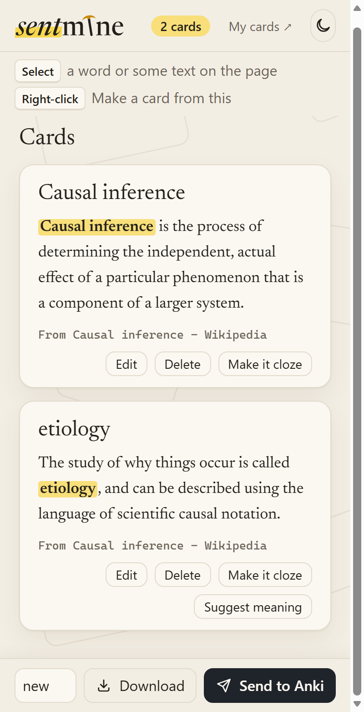

Click a word on the page
You read the PDF as it looks. Clicking simultaneously marks it yellow and makes a card from the sentence it came from.

sentmine is a reading app for students who read English course books. It turns the words and terms you meet into Anki cards, and brings those cards back when you meet them again.
Study question 1.3.7.
Click any word in the sentence.
. 1 .
The card is made with sentmine’s own rules, its base form included as sentmine’s word list gives it, which is not always right (least gives less).
Runs on your own computer, with Python 3.10 or newer. Reads PDFs that have selectable text, not scans. How to install
No sound. Real screens from sentmine; made with HyperFrames from the screenshots on this page. What it says:
Everything below is one real run on the solution manual, with Anki open. The card in the panel beside the steps (after them on a phone) is the one you follow. Click a screenshot to see the whole screen.
You read the PDF as it looks. Clicking simultaneously marks it yellow and makes a card from the sentence it came from.
Suggest meaning sends the word and its sentence to the small model gpt-5-nano and writes a short meaning on the back, for you to check and edit.
Drag over Simpson’s reversal, then over the sentence that explains it. The term is inside its own definition, so sentmine makes a cloze card that hides it.
With Anki open and the AnkiConnect add-on installed, one click puts the cards in your deck. Without Anki, Download gives you a deck file to import.

On page 25 the word comes up again, in another study question. Clicking it makes no duplicate: sentmine shows the card you already have, and you can skip it.

When you open the next chapter, every word and term you already have a card for is underlined in blue, with a blue dot in the page's margin beside its line and a count at the page's corner, so you see them while you scroll. Point at one, or reach it with the keyboard, and your own card appears, with the day you made it.

A browser extension for Edge and Chrome brings sentmine to what you read online.
The two clips are from Wikipedia’s article Causal inference (CC BY-SA 4.0).
I read statistics books in English. Copying a sentence into Anki by hand was slow, so most of the words I wanted to keep never became cards.
The first version tried to guess my new words from a list of words I know. On one Guardian article it made 103 cards, and only 4 of them were really new to me (README). So now I choose what becomes a card myself, while reading.
pip install -e ".[dev]" (it adds pytest), then run python -m pytest in the sentmine folder.The tests, as of that daysentmine runs on your own computer. You need Python 3.10 or newer. Open a terminal, then copy the lines for your system.
git clone https://github.com/esst-prog2/Sentmine
cd Sentmine
python -m venv .venv
.venv\Scripts\activate
pip install .
sentminegit clone https://github.com/esst-prog2/Sentmine
cd Sentmine
python3 -m venv .venv
source .venv/bin/activate
pip install .
sentmineNo git? On the GitHub page choose Code, then Download ZIP, unzip it, open a terminal in that folder and start from the third line. sentmine was built and tested on Windows.
What opens: sentmine’s reading page, in your browser, at http://127.0.0.1:8000 (or the next free port up to 8010). Paste a text, or open a PDF that has selectable text. Scanned PDFs cannot be read yet.
If the terminal says it cannot find sentmine, the virtual environment is not active: run the activate line again, then sentmine.